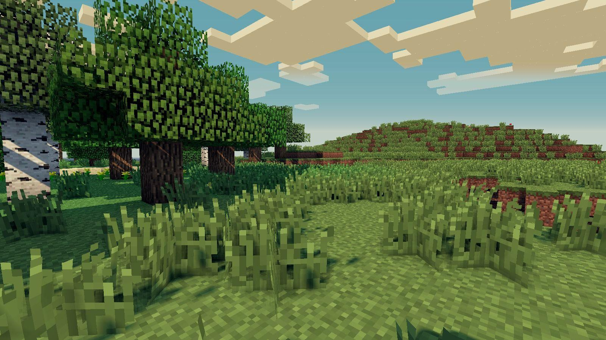
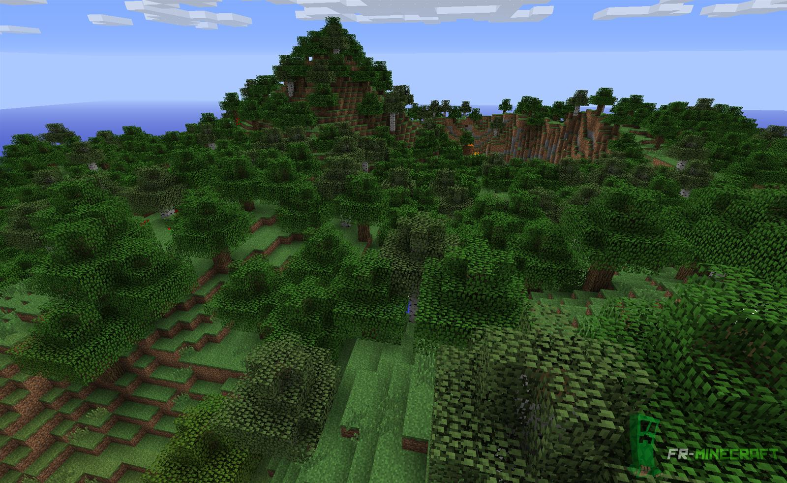
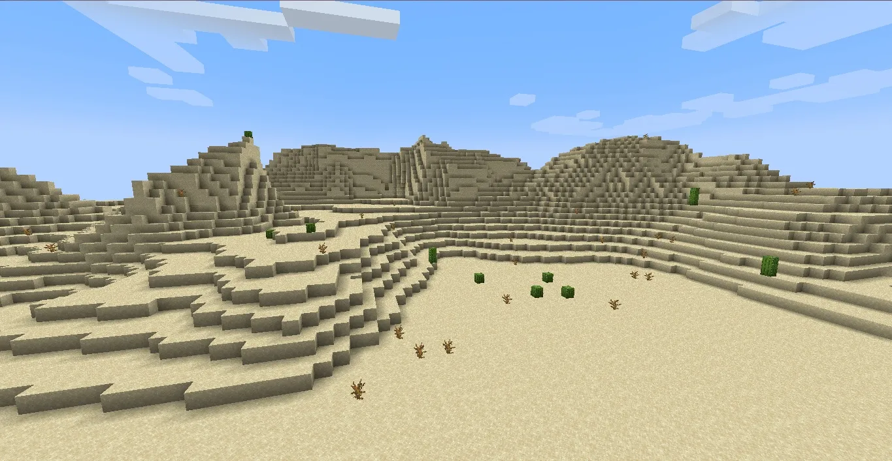
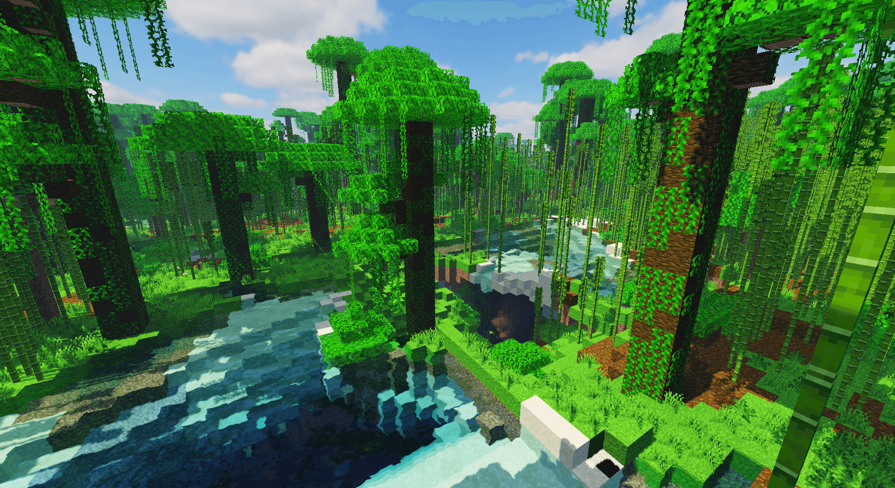
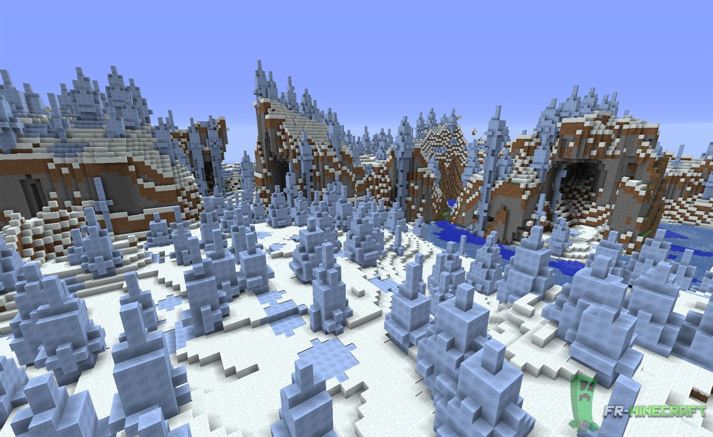

Dans Minecraft, un biome est une zone du monde avec un paysage et un climat particulier. Chaque biome a des blocs différents (neige, sable, herbe...), des animaux spécifiques, et parfois des structures (villages, temples...).
Rareté : Commun
La plaine est un biome très fréquent. Le terrain est plat, donc c’est un endroit parfait pour construire une base.
Animaux : vaches, moutons, cochons, poules, chevaux
Rareté : Commun
La forêt est remplie d’arbres, donc elle est très utile pour récupérer du bois.
Animaux : loups (parfois), renards , vaches, moutons
Rareté : Assez commun
Le désert est un biome chaud composé surtout de sable. On peut y trouver des villages et des temples du désert.
Animaux : lapins
Mobs fréquents : husks (zombies du désert)
Rareté : Rare
La jungle est un biome très dense avec des arbres géants et des lianes. On peut y trouver des perroquets, des pandas et parfois un temple de jungle.
Animaux : perroquets, pandas (selon la jungle), ocelots
Probabilité d’en trouver : faible (environ 1 monde sur 10 à proximité du spawn)
Rareté : Peu commun
La taïga est un biome froid avec beaucoup de sapins. On y trouve souvent des loups et parfois des villages.
Animaux : loups, renards, lapins
Rareté : Très rare
Ce biome est spécial car les monstres hostiles n’y apparaissent presque pas. Il est composé de champignons géants et on y trouve les mooshrooms.
Animaux : mooshrooms (vaches champignons)
Probabilité d’en trouver : très faible (parfois des milliers de blocs à parcourir)

Les biomes sont très importants dans Minecraft car ils influencent les ressources disponibles, les animaux, les mobs et les structures. Certains biomes sont faciles à trouver, tandis que d’autres sont très rares et demandent beaucoup d’exploration.